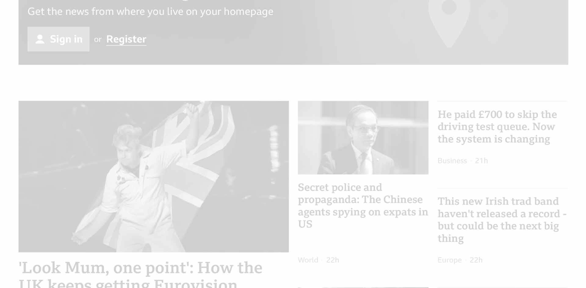
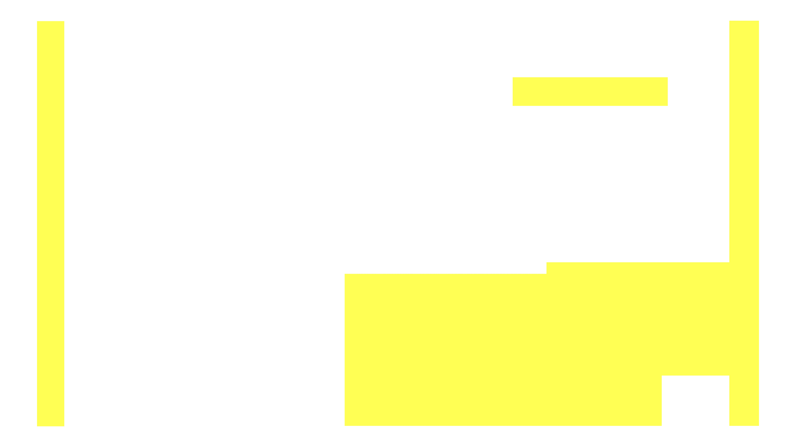

The Unquiet Page is a visual and interactive experiment about screen-based reading spaces.
This project comes from an everyday experience: in the digital media we encounter most frequently, text often does not have a space that fully belongs to itself. It is surrounded by advertisements, pushed by recommendation modules, and constantly interrupted by comments, highlights, navigation bars and other interface elements. Digital media seems to cut my reading experience into fragments.
Whether this happens intentionally or unintentionally, once I became aware of it, I noticed that when reading long-form texts, I often only read the first sentence of each paragraph.
This experience is often easily attributed to a failure of personal self-control. The reader seems to become a kind of ascetic figure, struggling to protect their attention against entertainment, streaming media and endless information feeds. They either succeed in finishing a long text, or fail and jump to the next, and then the next, source of stimulation.
However, in this project, I do not understand distracted attention in screen reading as a failure of individual concentration. Instead, I see it as a structural reading condition shaped by the media environment. Notifications, advertisements, recommendation modules, toolbars and linking mechanisms all enter the textual space, changing the continuity, rhythm and distribution of attention in reading.
I chose web-based reading as my site of analysis. On news websites, magazine websites and information platforms, the main body text rarely exists independently. It often appears together with advertisements, sponsored content, recommendation modules, navigation bars, login buttons and other interface elements. These elements do not simply sit around the text. They also participate in deciding how the text is seen, blocked, compressed and interrupted.
As a research method, I took screenshots of reading pages from websites such as BBC News, Politico, Daily Mail and Nautilus, and abstracted different information areas within these pages into graphic markings. Yellow represents advertisements, sponsored spaces and external information modules, while grey represents the main reading area. Through this method, I tried to observe the proportion and relationship between “text space” and “platform space” within digital reading pages.
I then reapplied these graphic structures, extracted from real webpages, to my own project introduction text. They cover the body text, compress the reading space and cut through the reading path. While reading this text, you may also be experiencing a frustrating condition of screen-based reading. In this space, graphic forms of different shapes overlap, subtract from one another and recombine, creating new interrupted layouts. The graphics that were originally used to analyse webpage structures become the active force that affects reading.
This project is not simply a critique of advertising or information overload. Instead, it uses graphic design methods to reveal a media condition: screen reading does not take place in a closed, quiet space that belongs only to text, but within an open media environment. Therefore, attention, textual space and reading continuity in screen reading are not naturally stable. They are often shaped by page structures, platform logics and interface controls, forming a dynamic relationship with our reading experience.
What do I mean by screen reading?
In Words Onscreen: The Fate of Reading in a Digital World, Naomi S. Baron defines her object of study as prose reading with a certain degree of continuity and linear weight, rather than extremely short texts such as road signs, advertisements or text messages. Screen reading is also not limited to e-book reading. It includes many forms of reading that take place on screens, such as news articles, social media updates, film reviews, blogs and academic articles.
Here, I would also like to use the term screen reading to refer broadly to reading that happens on screens. This includes digital versions of printed books, such as PDFs, EPUBs and HTML conversions, as well as digitally native books: texts originally designed for digital environments, which may involve videos, rotating images, hyperlinks and other technical conditions. In this project, these different forms of reading are all understood as part of screen reading.
In books about e-book reading and neuroscience, I have encountered several interesting arguments. Some authors suggest that screen reading did not suddenly invent reading habits such as skimming and scanning. Before the digital age, forms such as abridged editions, anthologies and summaries had already existed for a long time. In other words, shorter texts and compressed reading are not unique to the digital era. It may be more accurate to say that digital media has intensified or popularised existing tendencies towards short-form reading and non-linear reading. I imagine this can also be understood as a reading strategy for responding to the age of information overload. After all, within this small screen, there are so many texts waiting for me to see, process and understand.
At the same time, in Reader, Come Home: The Reading Brain in a Digital World, Maryanne Wolf argues that the reading circuit is shaped by three factors: what we read, how we read, and how we are taught to read. “How we read” includes the medium itself, such as print or screen. In this sense, different media can strengthen different cognitive processes. Repeated reading experiences may gradually train our behaviours and even our physiological patterns over time.
Therefore, during the making of this project, I understand it more as a form of visual expression: an expression of our already-fragmented attention, an expression of today’s reading experience, and also a speculation on where these experiences of screen reading may eventually lead us.
Method 1:
Extract advertising areas from real webpages and abstract them into colour blocks. These blocks appear randomly and cover the body text, emphasising the visual weight of information that may normally be integrated into the structure of a webpage.
Method 2:
Use edge placeholders that continuously expand and contract, compressing the reading space. This method comes from observing the different proportions of advertising across webpages. Some webpages contain almost no advertising, while on others, advertisements occupy a large amount of space and appear in various visual forms.


Method 3:
Abstract advertising modules into lines. This method develops further from Method 1. I treat the colour blocks as graphic forms made up of horizontal and vertical lines, then separate and recombine these lines. Through this process, I experiment with a reading experience that is difficult to follow as linear text. Instead, the reader has to move through, skip across, or return within the text.
